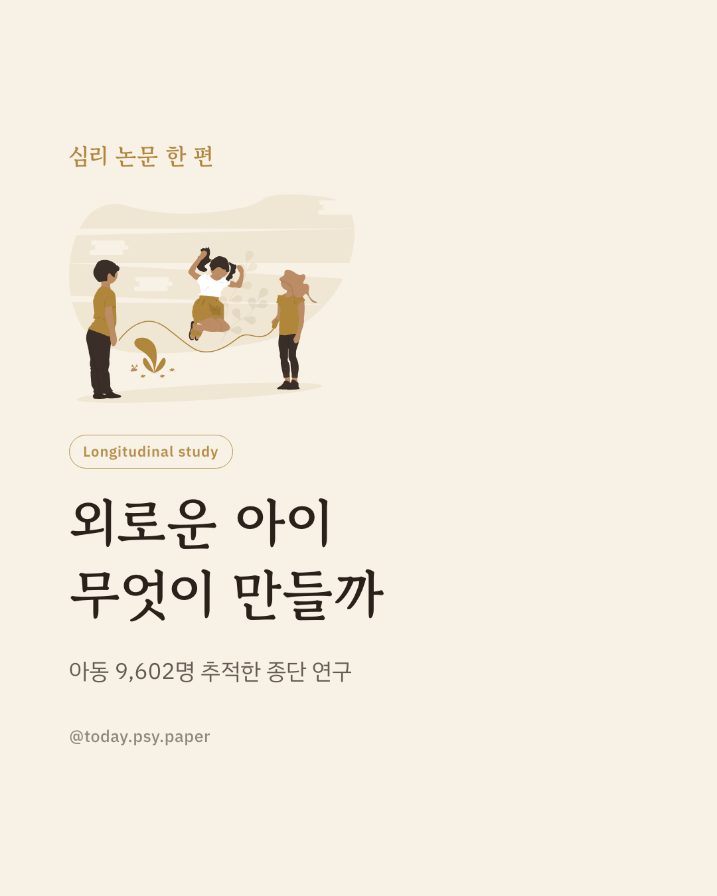
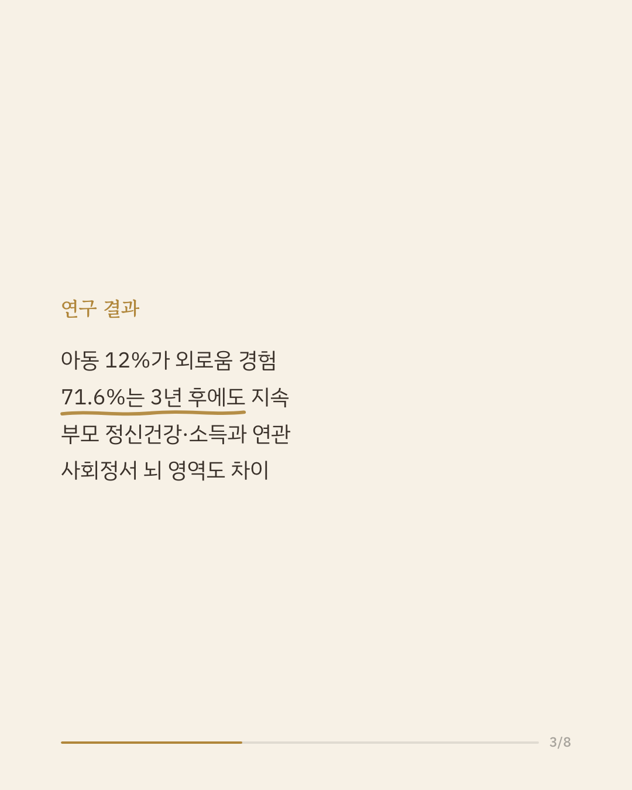
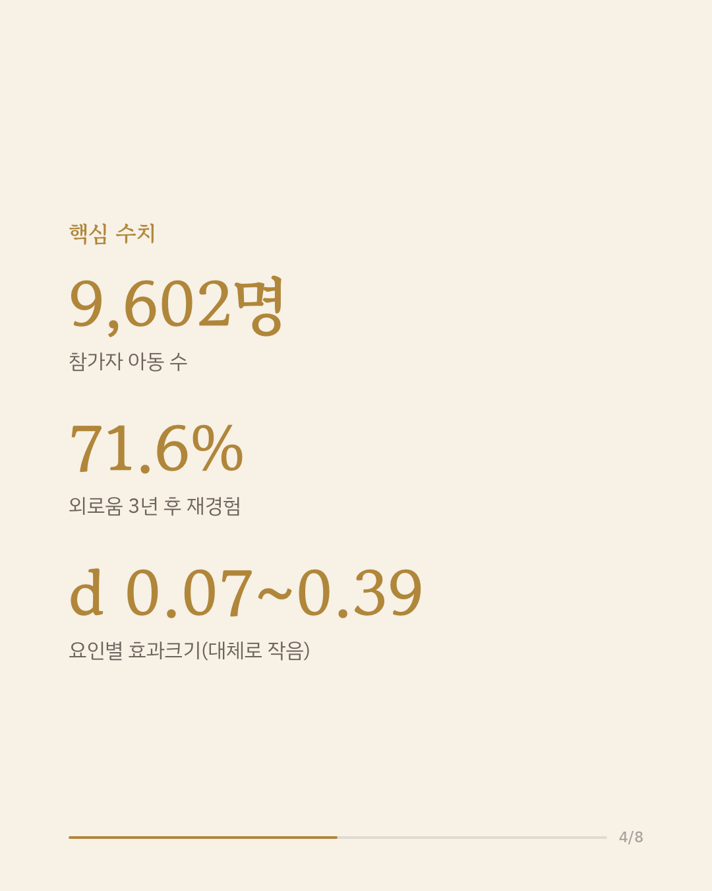
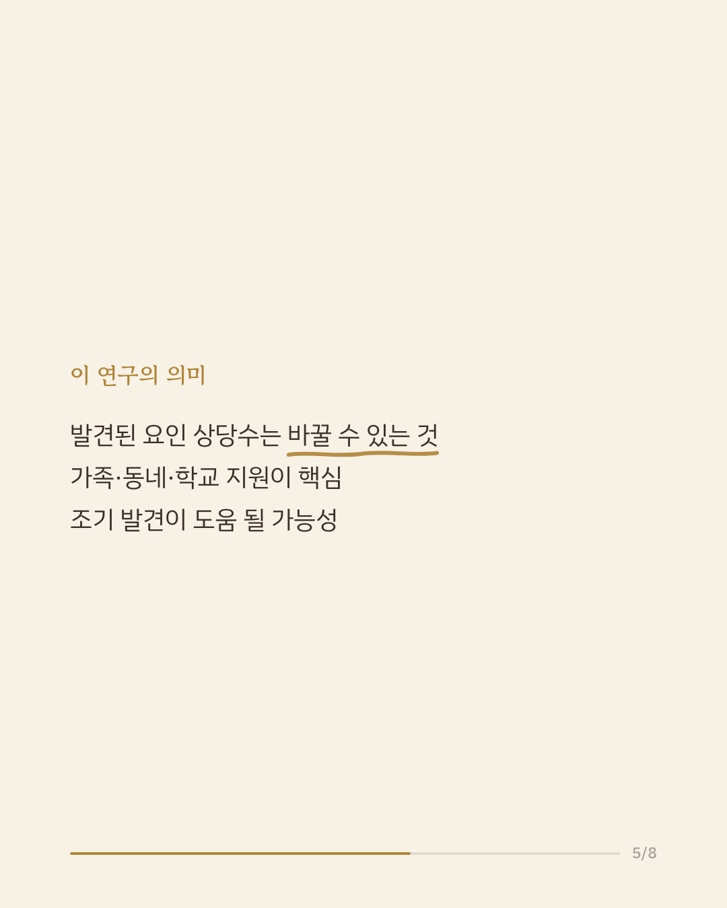
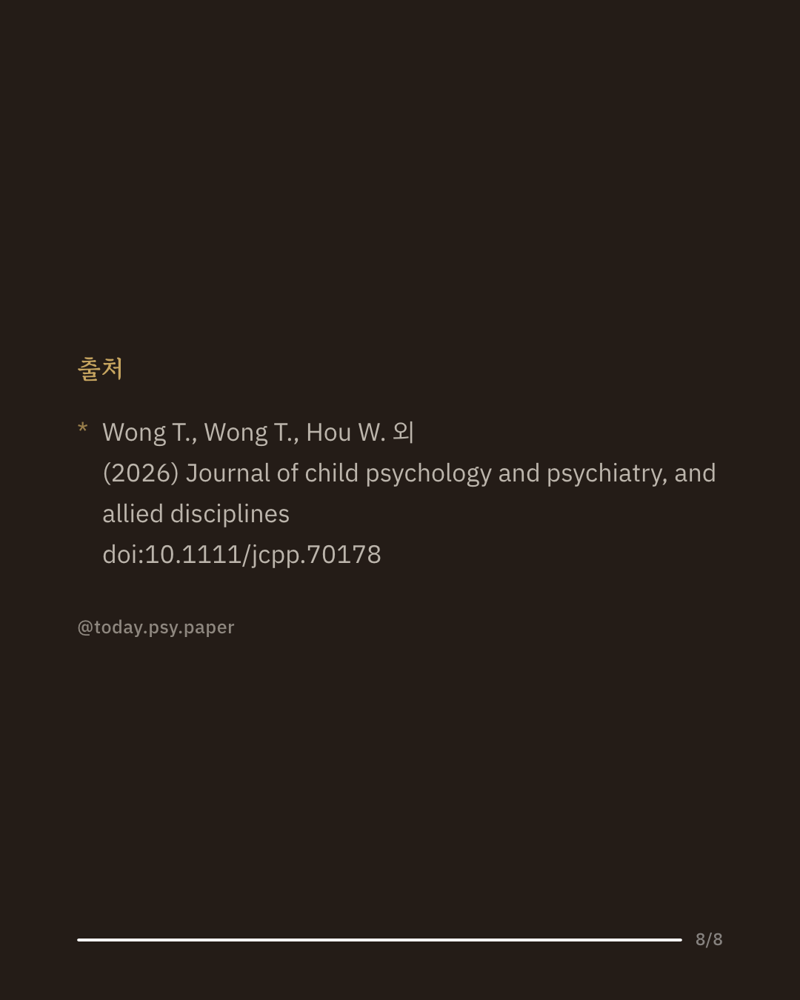

아동기 외로움은 최근 공중보건 문제로 주목받고 있지만, 어떤 아이가 더 취약한지는 충분히 밝혀지지 않았습니다. 심리적 어려움을 겪는 아이들을 조기에 알아보려면 위험 요인을 미리 파악하는 것이 중요합니다. 이 연구는 미국의 대규모 아동 코호트 자료를 이용해 외로움과 관련된 환경, 건강, 뇌 요인을 살펴보았습니다. 9~10세 아동 9,602명 중 12%가 외로움을 경험했고, 이 중 71.6%는 3년 뒤에도 외로움을 다시 겪었습니다. 부모의 정신건강, 가정 소득, 발달력을 비롯한 여러 환경·건강 요인이 외로움과 관련이 있었으며, 사회정서 처리를 담당하는 뇌 영역에서도 차이가 나타났습니다. 이 결과는 외로움과 관련된 요인 상당수가 가족, 동네, 학교 환경에서 바꿀 수 있는 부분이라는 점을 시사합니다. 다만 외로움은 자기보고로만 측정되었고 인과관계까지는 확인하지 못했습니다. 단일 연구이므로 확대 해석은 조심해야 합니다. 출처: Journal of Child Psychology and Psychiatry (2026), 'What makes a lonely child: environmental, health, and multimodal neuroimaging correlates of prospective loneliness in the ABCD study' #아동심리 #발달심리학 #외로움연구 #아동정신건강 #심리학논문
python3 publish.py 42186177